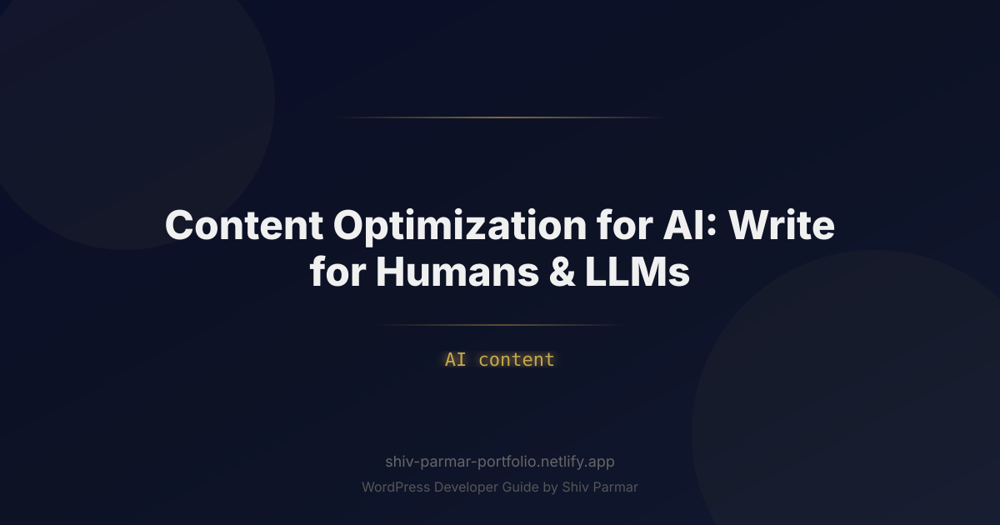

Content Optimization for AI: Write for Humans & | Shiv Parmar
Table of Contents
- What is Content Optimization for AI?
- Why Content Optimization for AI Matters in 2026
- Step-by-Step Guide to Dual-Audience Optimization
- ` and ``): Sentence 1: State the core answer, takeaway, or definition directly using bold, declarative language. Sentences 2-3: Provide supporting data, mechanisms, or evidence explaining *why* or *how*. Sentences 4+: Expand into nuanced details, real-world examples, or actionable steps for human context. This approach satisfies both audiences perfectly. Humans scanning the page get immediate answers, while LLMs pull clean, self-contained semantic units directly into their context windows. Step 3: Optimizing for Vector Databases and Semantic Density Large Language Models assess text through semantic density—the concentration of unique, valuable facts and concepts per hundred words. Fluffy text, generic transitions, and repetitive language lower your semantic density score, causing RAG pipelines to discard your content during retrieval filtering. To maximize semantic density for your dual audience: Eliminate Introductory Fluff: Avoid openings like "In today's fast-paced digital landscape, content is more important than ever." Start directly with actionable insights or precise definitions. Use Subject-Predicate-Object Triplets: Keep sentence structures clear. Instead of writing "It is believed by many experts that ranking might be affected by schema," write "Schema markup improves search engine indexing clarity." Maintain Explicit Entity Context: Avoid overusing pronouns such as "it," "they," or "this" across paragraph boundaries. State the target entity clearly so that isolated text chunks preserve full standalone context during AI retrieval. Consider how an isolated paragraph reads when pulled completely out of context by an AI chunking algorithm: <!-- Poor Semantic Context (Fails in isolated RAG chunks) --> <p>When optimizing these, it is vital to keep them short. They help search crawlers understand what you are doing, but if you overdo it, they will ignore them.</p> <!-- High Semantic Context (Succeeds in isolated RAG chunks) --> <p>When optimizing HTML meta descriptions, digital marketers must maintain a length under 160 characters. Concise meta descriptions help search crawlers determine page context, whereas truncated descriptions reduce organic click-through rates.</p> Step 4: Crafting Modular Content Blocks with Semantic HTML Modern browser engines and LLM web scrapers rely on semantic HTML tags to understand page layout and information weighting. Avoid wrapping entire documents in generic `` tags with arbitrary CSS classes. Instead, utilize meaningful semantic markup that signals structural intent. Structure your content blocks using explicit HTML elements: <article> <header> <h2>Semantic HTML for AI Optimization</h2> <p>Using proper HTML structural tags allows LLMs to determine document hierarchy instantly.</p> </header> <section> <h3>Key HTML Tags to Standardize</h3> <ul> <li><strong>&lt;article&gt;:</strong> Defines the primary self-contained content body.</li> <li><strong>&lt;section&gt;:</strong> Segments distinct topical clusters within the article.</li> <li><strong>&lt;blockquote&gt;:</strong> Highlights expert testimonials or core quote metrics.</li> </ul> </section> </article> When an LLM parses this code, the tags explicitly map the structural relationships between elements without requiring complex visual rendering analysis. Step 5: Balancing Conversational Depth with Data-Driven Precision While machines love clean code and direct facts, humans crave connection, narrative flow, and proof of real-world experience. Merging these requirements means validating every theoretical statement with hard data, real-world case studies, or first-hand experience (E-E-A-T: Experience, Expertise, Authoritativeness, and Trustworthiness). Integrate data points seamlessly within structured text. When stating a claim, follow it immediately with statistical validation, clear methodology, or expert citations. This satisfies human skepticism while offering LLMs high-confidence factual associations to cite in generated answers. Best Practices for Writing for Humans and LLMs
- Common Mistakes to Avoid
- `, ``), lists, or table elements creates a high friction environment for both human readers and machine scrapers. Unformatted text forces LLMs to spend additional computational effort inferring structural context, increasing the likelihood of poor semantic extraction or complete omission from search answers. Organize every document into logical, visually distinct modules using semantic HTML tags. 5. Sacrificing Brand Voice for Technical Precision While optimization for LLM retrieval is essential, stripping away all humor, brand voice, and emotional connection creates dry, forgettable content. Machines process your information to answer user queries, but humans buy your products, subscribe to your newsletters, and build long-term trust with your brand. Always write with genuine empathy and distinctive brand personality—structuring that unique voice within clear, machine-readable HTML frameworks. Open to work Hire a WordPress Developer Who Delivers Results From custom themes to WooCommerce stores, I build WordPress sites that perform. Available worldwide. Get Free Quote → Conclusion
Search is undergoing its most profound transformation since the invention of the hyperlink. Millions of users no longer scroll through pages of blue links; instead, they query conversational models like ChatGPT, Perplexity, Claude, and Google Gemini to receive direct, synthesized answers. This fundamental shift has forced content creators, SEO specialists, and digital marketers to adapt to a new reality: your content is no longer read solely by human beings. It is ingested, parsed, chunked, and synthesized by Large Language Models (LLMs) before a human ever sets eyes on it.
This dynamic introduces a unique publishing challenge: mastering content creation for a dual audience. You must write articles that captivate, convince, and convert human readers while simultaneously structuring that exact same text so that machine learning algorithms can effortlessly extract, index, and cite your insights. Skew too far toward human engagement, and your content risks remaining invisible to AI answer engines. Skew too far toward algorithmic structure, and your text turns into dry, robotic jargon that drives real visitors away.
To succeed in this modern search landscape, modern publishing strategy demands a dedicated approach to optimization. Building high-performing AI content requires aligning technical structure with editorial excellence—ensuring that every paragraph delivers real human value while serving as clear, structured input for neural networks.
What is Content Optimization for AI?
Content optimization for AI—often referred to as Generative Engine Optimization (GEO) or Answer Engine Optimization (AEO)—is the practice of creating and structuring digital content so that both human readers and Large Language Models can easily read, comprehend, and utilize the information. Unlike traditional Search Engine Optimization (SEO), which historically focused on matching query keywords, backlink counts, and metadata tags, AI-focused optimization centers on semantic clarity, information density, structural hierarchy, and factual authority.
When a human reads an article, they process information linearly, looking for story, emotional resonance, practical takeaways, and brand personality. When an LLM processes an article, it breaks the text down into numerical vectors (embeddings), slices paragraphs into semantic chunks, and calculates the mathematical relationships between entities, concepts, and facts. The process works through several core mechanisms:
- Tokenization and Embedding: The model converts text into tokens and maps them across a multi-dimensional semantic space to measure context and intent.
- Chunking: Information is broken down into discrete blocks (typically 250 to 500 tokens) to be stored in vector databases for Retrieval-Augmented Generation (RAG).
- Entity Extraction: The system identifies key entities (people, products, frameworks, technologies) and maps their relationship to established knowledge graphs.
- Synthesis and Attribution: When a user submits a query, the model retrieves relevant chunks, synthesizes a response, and cites the sources that offered the clearest, most authoritative data.
Designing for a dual audience means bridging the gap between human reader expectations and machine processing needs. It requires writing clear, authoritative copy that satisfies human curiosity while formatting text into logical, machine-readable blocks that LLMs can extract without losing context.
Why Content Optimization for AI Matters in 2026
The digital ecosystem has crossed a major threshold. Zero-click searches—where users obtain their answers directly from a search engine results page or AI chat interface without clicking a website link—account for over 60% of all online queries. When users do click through, they often arrive via direct citations embedded in AI-generated answers. If your digital asset is not formatted for AI retrieval, your business simply does not exist within the primary decision-making environment of modern web users.
Furthermore, LLMs do not rank content using standard keyword density ratios. Instead, they rank sources based on semantic relevance, information gain, and structural clarity. High-performing AI content in 2026 demands a complete overhaul of legacy content workflows for three key reasons:
- The Rise of Retrieval-Augmented Generation (RAG): Enterprise AI engines rely heavily on RAG to fetch real-time web data. If your content lacks explicit context, uses ambiguous pronouns, or hides key insights behind lengthy introductions, RAG systems will pass over your site in favor of clearer, more structured source material.
- Shift from Keywords to Knowledge Graphs: Search engines are now answer engines powered by entity-relationship models. Modern optimization requires clear entity mapping so that LLMs recognize your brand, products, and insights as canonical facts.
- Decreasing Attention Spans and Increasing Quality Expectations: Human readers, accustomed to rapid AI answers, expect immediate clarity. If your landing pages or blog posts do not deliver value instantly, bounce rates spike, signaling to both search crawlers and AI agents that your content lacks authority.
Step-by-Step Guide to Dual-Audience Optimization
Achieving balance between human readability and machine readability requires a methodical editorial and technical strategy. Follow this step-by-step workflow to engineer content that excels across both domains.
Step 1: Architecting Clear Entity Hierarchies and Structured Data
Before writing a single word, establish a unambiguous structural skeleton for your piece. LLMs rely heavily on standardized structural cues to determine how concepts relate to one another. Using explicit HTML tags, semantic sectioning, and structured data schemas gives machines a direct blueprint of your content's meaning.
Implement JSON-LD (JavaScript Object Notation for Linked Data) schema markup on every piece of published content. This explicit metadata provides LLMs with unambiguous factual statements regarding the article's topic, author, entity relationships, and core questions answered.
<script type="application/ld+json">
{
"@context": "https://schema.org",
"@type": "TechArticle",
"headline": "Content Optimization for AI: Write for Humans & LLMs",
"description": "Learn how to optimize content for a dual audience of human readers and Large Language Models using semantic structure, BLUF formatting, and schema markup.",
"author": {
"@type": "Person",
"name": "Alex Mercer",
"jobTitle": "Lead AI Content Strategist"
},
"mainEntity": {
"@type": "Question",
"name": "How do you optimize content for Large Language Models?",
"acceptedAnswer": {
"@type": "Answer",
"text": "Optimizing content for LLMs involves using structured semantic HTML, placing key takeaways at the top of sections (BLUF method), maintaining high information density, and implementing JSON-LD schema markup."
}
}
}
</script>
This code explicitly informs an AI crawler about the main topic, the author's credentials, and exact answers to primary queries before the model even begins parsing the raw HTML body.
Step 2: Implementing the BLUF (Bottom Line Up Front) Method
Traditional web copywriting often uses "narrative build-up"—leading readers through an extensive context setting exercise before revealing the core answer at the bottom of the section. For LLMs, this approach destroys retrieval efficiency. When vector databases chunk your content into 300-word fragments, a chunk containing only background context without the core answer will receive a low semantic similarity score for query matching.
Apply the BLUF (Bottom Line Up Front) framework across every sub-heading (`
` and ``):
- Sentence 1: State the core answer, takeaway, or definition directly using bold, declarative language.
- Sentences 2-3: Provide supporting data, mechanisms, or evidence explaining *why* or *how*.
- Sentences 4+: Expand into nuanced details, real-world examples, or actionable steps for human context.
- Sentence 1: State the core answer, takeaway, or definition directly using bold, declarative language.
- Sentences 2-3: Provide supporting data, mechanisms, or evidence explaining *why* or *how*.
- Sentences 4+: Expand into nuanced details, real-world examples, or actionable steps for human context.
This approach satisfies both audiences perfectly. Humans scanning the page get immediate answers, while LLMs pull clean, self-contained semantic units directly into their context windows.
Step 3: Optimizing for Vector Databases and Semantic Density
Large Language Models assess text through semantic density—the concentration of unique, valuable facts and concepts per hundred words. Fluffy text, generic transitions, and repetitive language lower your semantic density score, causing RAG pipelines to discard your content during retrieval filtering.
To maximize semantic density for your dual audience:
- Eliminate Introductory Fluff: Avoid openings like "In today's fast-paced digital landscape, content is more important than ever." Start directly with actionable insights or precise definitions.
- Use Subject-Predicate-Object Triplets: Keep sentence structures clear. Instead of writing "It is believed by many experts that ranking might be affected by schema," write "Schema markup improves search engine indexing clarity."
- Maintain Explicit Entity Context: Avoid overusing pronouns such as "it," "they," or "this" across paragraph boundaries. State the target entity clearly so that isolated text chunks preserve full standalone context during AI retrieval.
Consider how an isolated paragraph reads when pulled completely out of context by an AI chunking algorithm:
<!-- Poor Semantic Context (Fails in isolated RAG chunks) -->
<p>When optimizing these, it is vital to keep them short. They help search crawlers understand what you are doing, but if you overdo it, they will ignore them.</p>
<!-- High Semantic Context (Succeeds in isolated RAG chunks) -->
<p>When optimizing HTML meta descriptions, digital marketers must maintain a length under 160 characters. Concise meta descriptions help search crawlers determine page context, whereas truncated descriptions reduce organic click-through rates.</p>
Step 4: Crafting Modular Content Blocks with Semantic HTML
Modern browser engines and LLM web scrapers rely on semantic HTML tags to understand page layout and information weighting. Avoid wrapping entire documents in generic `
Structure your content blocks using explicit HTML elements:
<article>
<header>
<h2>Semantic HTML for AI Optimization</h2>
<p>Using proper HTML structural tags allows LLMs to determine document hierarchy instantly.</p>
</header>
<section>
<h3>Key HTML Tags to Standardize</h3>
<ul>
<li><strong><article>:</strong> Defines the primary self-contained content body.</li>
<li><strong><section>:</strong> Segments distinct topical clusters within the article.</li>
<li><strong><blockquote>:</strong> Highlights expert testimonials or core quote metrics.</li>
</ul>
</section>
</article>
When an LLM parses this code, the tags explicitly map the structural relationships between elements without requiring complex visual rendering analysis.
Step 5: Balancing Conversational Depth with Data-Driven Precision
While machines love clean code and direct facts, humans crave connection, narrative flow, and proof of real-world experience. Merging these requirements means validating every theoretical statement with hard data, real-world case studies, or first-hand experience (E-E-A-T: Experience, Expertise, Authoritativeness, and Trustworthiness).
Integrate data points seamlessly within structured text. When stating a claim, follow it immediately with statistical validation, clear methodology, or expert citations. This satisfies human skepticism while offering LLMs high-confidence factual associations to cite in generated answers.
Best Practices for Writing for Humans and LLMs
Creating content for a dual audience requires maintaining a careful balance across formatting, tone, technical execution, and authority markers. Use the following established best practices to keep your content competitive across traditional and generative search environments.
Contrast Traditional SEO with AI Optimization
Understanding how writing requirements have shifted helps content teams adapt their editorial guidelines effectively:
| Optimization Factor | Traditional SEO Focus | Dual-Audience AI Optimization Focus |
|---|---|---|
| Primary Target | Keyword matching & Web Crawlers | Vector embeddings, LLM RAG pipelines & Humans |
| Content Structure | Linear text with keyword placement | Modular BLUF chunks with semantic HTML tags |
| Information Delivery | Long intros to increase time-on-page | Immediate answers backed by high information density |
| Success Metric | SERP Rankings & Direct Organic Clicks | AI Citations, Brand Mentions & Conversion Traffic |
| Contextual Clarity | Relies on page-level keywords | Self-contained sentence & paragraph entity modeling |
Maximize Formatting Scannability
Human readers scan pages using an "F-shaped" visual pattern, looking for bullet points, bold text, and brief tables. Coincidentally, LLMs process organized structural elements with far higher accuracy than dense walls of unbroken prose. Ensure your editorial layout includes:
- Tables for Comparative Data: Tables organize relational data cleanly, making it easy for LLMs to extract structural comparisons and present them in query outputs.
- Ordered Lists for Step-by-Step Processes: Use `
- ` tags when sequence matters, enabling AI engines to reproduce actionable workflows accurately.
- Unordered Lists for Characteristics and Features: Use `
- ` tags for grouping non-sequential items, improving retrieval accuracy during chunk parsing.
- Bold Lead-in Keywords: Bold the first two to three words of list items to provide immediate semantic context for both visual scanners and text parsers.
Establish Clear Authoritative E-E-A-T Signal Anchors
LLMs are trained to prioritize high-trust sources over unverified text. Incorporating distinct signals of Experience, Expertise, Authoritativeness, and Trustworthiness (E-E-A-T) ensures that AI models view your content as a reliable source worth citing.
- Include Explicit Author By-Lines: Link author names to dedicated profile pages detailing their credentials, background, and publications.
- Cite Primary Sources: Link out to verified academic papers, official documentation, or original research datasets.
- Embed Proprietary Data: Publish original statistics, internal benchmark tests, and proprietary survey results. Unique data points cannot be hallucinated or replicated by AI without direct citation back to your URL.
Common Mistakes to Avoid
Even experienced content teams make fundamental errors when adjusting their publishing strategies for machine retrieval. Avoid these critical pitfalls when optimizing your digital content.
1. Producing Generic "AI Slop" Without Human Editorial Oversight
One of the most widespread mistakes is using generative AI to produce high volumes of unchecked, generic articles. Purely synthetic content often exhibits repetitive sentence structures, low information density, and surface-level analysis. While this content may appear coherent at a glance, LLMs recognize the lack of original information gain. As a result, vector search systems deprioritize these pages during RAG extraction. Always run generated drafts through a thorough human editorial pass to add real-world nuance, original insights, and proprietary data.
2. Over-Using Pronouns and Ambiguous Context
Writing naturally often leads authors to use relative pronouns such as "it," "this process," or "they" when referring back to subjects introduced earlier in a section. However, when an LLM breaks a 2,000-word article into discrete 300-word context chunks, a chunk containing only "This model improves efficiency" loses its underlying reference object. Always explicitly name the specific tool, strategy, or framework being discussed within every distinct section.
<!-- Ambiguous Narrative (Fails vector retrieval context) -->
<p>It helps you increase your total output without increasing overhead. When implemented correctly, it transforms how teams publish.</p>
<!-- Explicit Narrative (Succeeds across both audiences) -->
<p>Content optimization for AI helps digital marketing teams increase editorial output without increasing overhead costs. When implemented correctly, dual-audience optimization transforms corporate publishing efficiency.</p>
3. Hiding Direct Answers Behind Narrative Intros
Avoid taking hundreds of words to "set the stage" before addressing the core topic of a header. Readers looking for quick answers will bounce immediately, while AI scrapers will assign low relevance scores to the section's initial vector chunks. Lead with the core answer immediately beneath every heading using the BLUF method, then use the following paragraphs to build narrative depth, provide examples, and detail practical applications.
4. Neglecting Machine-Readable Layout Formatting
Publishing long, unbroken blocks of text without descriptive heading tags (`
`, ``), lists, or table elements creates a high friction environment for both human readers and machine scrapers. Unformatted text forces LLMs to spend additional computational effort inferring structural context, increasing the likelihood of poor semantic extraction or complete omission from search answers. Organize every document into logical, visually distinct modules using semantic HTML tags.
5. Sacrificing Brand Voice for Technical Precision
5. Sacrificing Brand Voice for Technical Precision
While optimization for LLM retrieval is essential, stripping away all humor, brand voice, and emotional connection creates dry, forgettable content. Machines process your information to answer user queries, but humans buy your products, subscribe to your newsletters, and build long-term trust with your brand. Always write with genuine empathy and distinctive brand personality—structuring that unique voice within clear, machine-readable HTML frameworks.
Conclusion
Mastering modern digital strategy requires embracing a dual audience: real human readers seeking genuine connection and LLMs parsing text for accurate, contextual answers. Effective content optimization no longer forces a compromise between engaging storytelling and technical clarity. By structuring your insights with clear semantic hierarchy, answering core questions directly, and maintaining an authentic voice, you ensure both users and AI agents can seamlessly extract value from your work.
As search evolves toward generative engines, the brands that thrive will treat AI content visibility as an extension of great user experience rather than a series of algorithmic shortcuts. However, even the most thoughtfully crafted content requires a fast, structured, and technically resilient web platform to reach its full potential across search and discovery ecosystems.
If you want to ensure your digital foundation is built to support modern discovery standards, Shiv Parmar is available for WordPress development work worldwide. Whether you need custom theme development, performance tuning, or technical schema implementation to make your site ready for the future, get in touch today to build a web presence that performs effortlessly for both humans and machines.